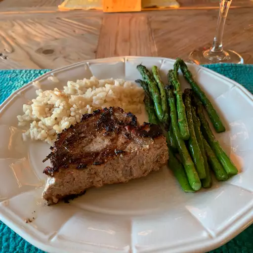

Grilled Asparagus Recipe

Description
Searching for the best summer side dish that comes together in minutes?Look no further than this easy grilled Asparagus that's tossed in olive oil, seasoned with salt and pepper, and grilled until perfectly tender.
Ingredients
- Asparagus: Start with a pound of fresh,clean,trimmed asparagus.
- Oil: Olive oil keeps the asparagus from drying out and gives the seasonings something to stick to.
- Seasonings: This grilled asparagus is simply seasoned with salt and pepper
Steps
- Toss the asparagus with olive oil.
- Season
- Grill until lightly charred
- The asparagus should be perfectly cooked after 3 to 5 minutes on a light grill heated to high heat
- You'll know the asparagus spears are done when they're lightly charred and tender when pierced with a fork